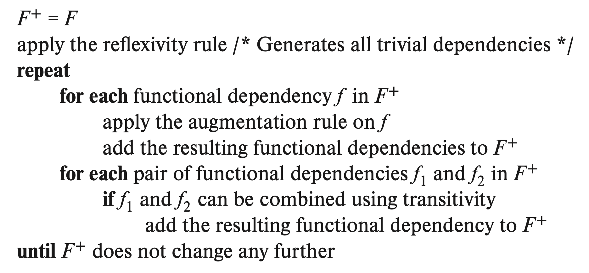

The functional dependency \(\alpha\rightarrow\beta\) holds in an instance of relation schema \(r(R)\) iff \(t_1[\alpha] = t_2[\alpha] \Rightarrow t_1[\beta] = t_2[\beta]\) for any tuples \(t_1, t_2\).
If the functional dependency \(\alpha\rightarrow\beta\) holds for all the valid instances of relation \(r(R)\), we say the functional dependency holds for the relation schema \(r(R)\).
Superkey can then be defined based on functional dependency: if the functional dependency \(K \rightarrow R\) holds for \(r(R)\), then \(K\) is a superkey of \(r(R)\). That is, superkey can be considered as a special case of functional dependency, and functional dependency is the generalization of superkey, who has the ability to express constraints that cannot be expressed by superkey.
If \(\beta\subset\alpha\), the functional dependency \(\alpha \rightarrow \beta\) is called trivial since this dependency holds for all the relation schema. Specially, dependency \(A \rightarrow A\) is trivial obviously.
For all the instance that satisfies \(F_1\) that also satisfies \(F_2\), we define \(F_2\) is logically implied by \(F_1\), denoted as \(F_1 \Rightarrow F_2\). If \(F_1 \Leftrightarrow F_2\) we say they are equivalent.
The Armstrong’s axiom is sound and complete(that is, all and only the correct dependencies will be generated) to find the closure of functional dependency: \[ \begin{align} &\text{Reflexivity Rule:} &&\beta \subset \alpha &&\Rightarrow \alpha \rightarrow \beta \\ &\text{Augmentation Rule:} &&\alpha \rightarrow \beta &&\Rightarrow \gamma\alpha \rightarrow \gamma\beta \\ &\text{Transitivity Rule:} &&\alpha \rightarrow \beta, \beta \rightarrow \gamma &&\Rightarrow \alpha \rightarrow \gamma \end{align} \] Some further rules can be inferred from Armstrong’s axiom: \[ \begin{align} &\text{Union and Decomposition:} &&\alpha\rightarrow\beta, \alpha\rightarrow\gamma &&\Leftrightarrow \alpha \rightarrow \beta\gamma \\ &\text{Pseudotransitivity Rule:} &&\alpha \rightarrow \beta, \gamma\beta \rightarrow \delta &&\Rightarrow \alpha\gamma \rightarrow \delta \end{align} \] By applying the Armstrong’s axiom and its deductions, we’ll be able to construct the closure \(F^+\) of any functional dependency set \(F\). Here gives the pseudocode to construct \(F^+\):

==TODO: Use LaTeX package to generate pseudocode, add Python implementation.==
The attribute \(B\) is functionally determined by \(\alpha\) iff \(\alpha \rightarrow B\). The set of attributes that functionally determined by \(\alpha\) is called the closure of \(\alpha\) under \(F\). It is trivial to implement a naive algorithm to generates \(\alpha^+\):
def get_attrs_closure(self, attrs):
assert attrs <= self.attrs
attrs_closure = attrs
modified = True
while modified:
modified = False
for p, q in self.deps:
if p <= attrs_closure and not q <= attrs_closure:
attrs_closure = attrs_closure.union(q)
modified = True
return attr_closureRefer to relation.py to the implementation, with unittest and performance test provided.
A more delicate algorithm (with higher implementation complexity, of course) to compute closure of attribute set: ==TODO: Complete the optimized algorithm==.
def get_attrs_closure(self, attrs):
closure = set()
fd_count = [p for p, q in dependencies]
for attr in self.attrs:
passThe canonical cover \(F_c\) is the equivalence of \(F\) that meets
Boyce-Cordd Normal Form(BCNF) is the normal form which requires all the nontrivial functional dependencies are removed. Formally, a relation schema meets BCNF if and only if one of the following is true for all functional dependency \(\alpha \rightarrow \beta\) in \(F^+\), where \(F^+\) is the closure of functional dependency set \(F\) upon \(r(R)\):
Third Normal Form(3NF) relaxed the requirement of functional dependency, which allows some non-superkey nontrival functional dependency.
The third condition relaxes the requirement to remove all nontrivial functional dependencies from BCNF.